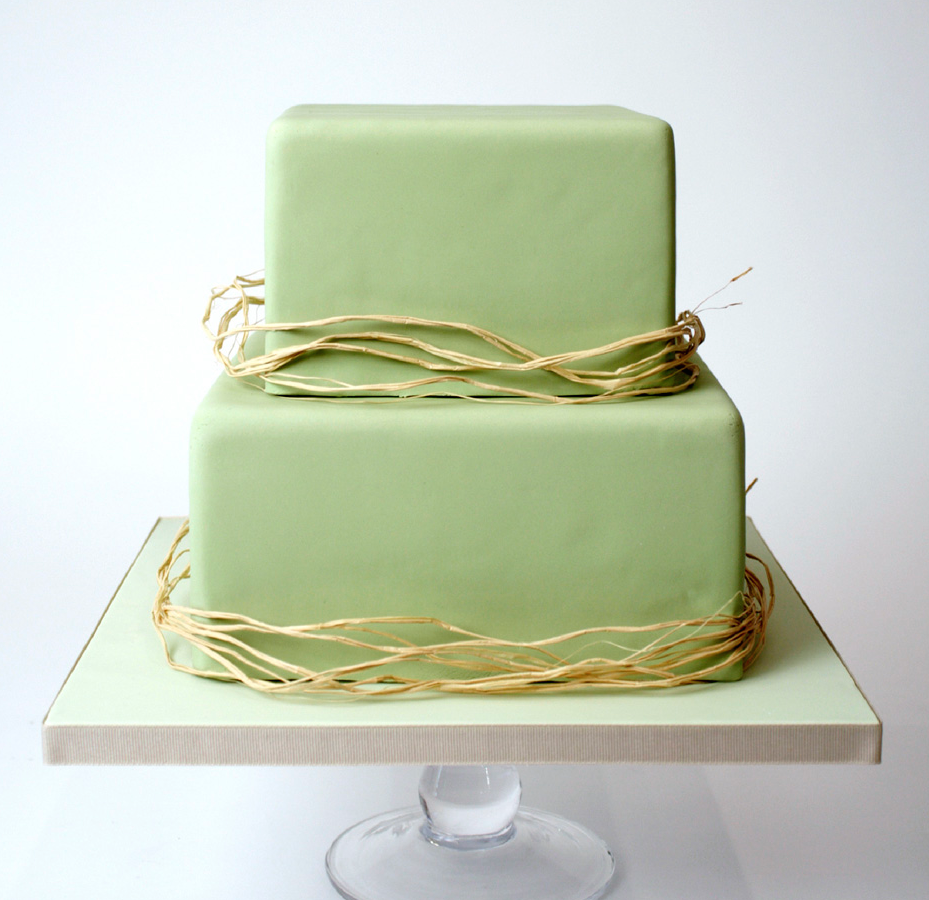

On today’s market there is a never ending variety of the most delicious sweets and pastries to please both the palate and the eyes. We have become so used to this diverse range of bread, mouth watering pastries and cakes that seldom we ask just how they come into existence. I guess my initial interest in the origin of the baking industry was not aroused by accident; rather I suspect it was kindled by a chain of events occurring earlier in my life. My Grandfather owned a small hotel and bakery in Switzerland and when he retired my father who was an excellent pastry cook continued the business. As a small child I spent many hours watching my dad at work and later followed in his footsteps almost as a matter of course. Then again, I have a suspicion that it may have been “fate-by-design” that made me take up pastry-cooking.
The question still remains, was my career pre-determined by the fact that my grandfather had thousands of letterheads printed for his bakery which included his name? The prospect of a hefty quantity discount would no doubt have made perfect sense to my frugal fore bearer; it must have been so much cheaper getting all this printing done in a big way. Grandfather should have realised (and I suspect that he might have) that there was not the slightest chance that any one generation could ever use up this huge mountain of stationery.
Granddad’s first name “Fritz” was also my father’s first name and when I was born there was never any question as to what my name should be! After all there were still zillions of these letterheads leftover, so let’s not waste any money! Anyhow, Fritz was considered a perfectly good name by all and “Pfister” being the old Swiss/German form used for “Baker” just another indication of a long family tradition. Until modern days the old brotherhood of Swiss bakers was called the “Zunft der Pfistern”. One thing is sure, people could never have survived without food, but what is now called the “staff of life,” bread, and the making of it started in comparatively recent times. Right in the beginning of recorded history there was the discovery of fire making, thus along with light, heat could be generated. Then there followed the discovery of different grasses and their seeds which could be prepared for nourishment. With the help of heat and grain, one was now able to prepare a kind of broth. Hot stones were covered with this broth or the broth was roasted on embers and “hey presto” the first unsoured flat bread was created. This ability to prepare stable food radically changed the eating habits and lifestyle of our early ancestors, from being hunters they became settlers.
Granddad’s first name “Fritz” was also my father’s first name and when I was born there was never any question as to what my name should be! After all there were still zillions of these letterheads leftover, so let’s not waste any money! Anyhow, Fritz was considered a perfectly good name by all and “Pfister” being the old Swiss/German form used for “Baker” just another indication of a long family tradition. Until modern days the old brotherhood of Swiss bakers was called the “Zunft der Pfistern”. One thing is sure, people could never have survived without food, but what is now called the “staff of life,” bread, and the making of it started in comparatively recent times. Right in the beginning of recorded history there was the discovery of fire making, thus along with light, heat could be generated. Then there followed the discovery of different grasses and their seeds which could be prepared for nourishment. With the help of heat and grain, one was now able to prepare a kind of broth. Hot stones were covered with this broth or the broth was roasted on embers and “hey presto” the first unsoured flat bread was created. This ability to prepare stable food radically changed the eating habits and lifestyle of our early ancestors, from being hunters they became settlers.